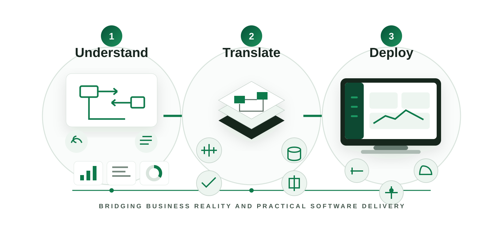

Why FDE
技術を導入するだけでなく、
現場で使えるところまで届ける。
FDE（Forward Deployed Engineering）は、顧客の業務を理解し、必要な技術を設計・実装し、実際の運用に組み込むところまでをつなぐ考え方です。
Forward Deployed Engineering
FDEとは何か。

01 / Understand業務を理解する
02 / Translate技術に落とし込む
03 / Deploy業務に統合する
Background
デジタル化の壁は、ツール不足だけではありません。
→
→
Technology → Working OperationsFDE bridges the gap
Why it matters
必要なのは、技術そのものではなく、技術が業務の中で機能する状態です。
FDEは、現場と開発の間に立ち、導入前の設計から実運用までをつなぐことで、そのギャップを埋めます。